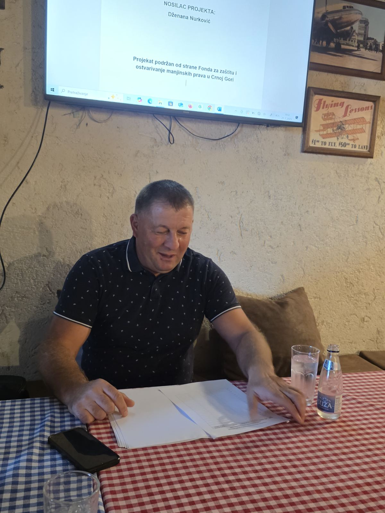
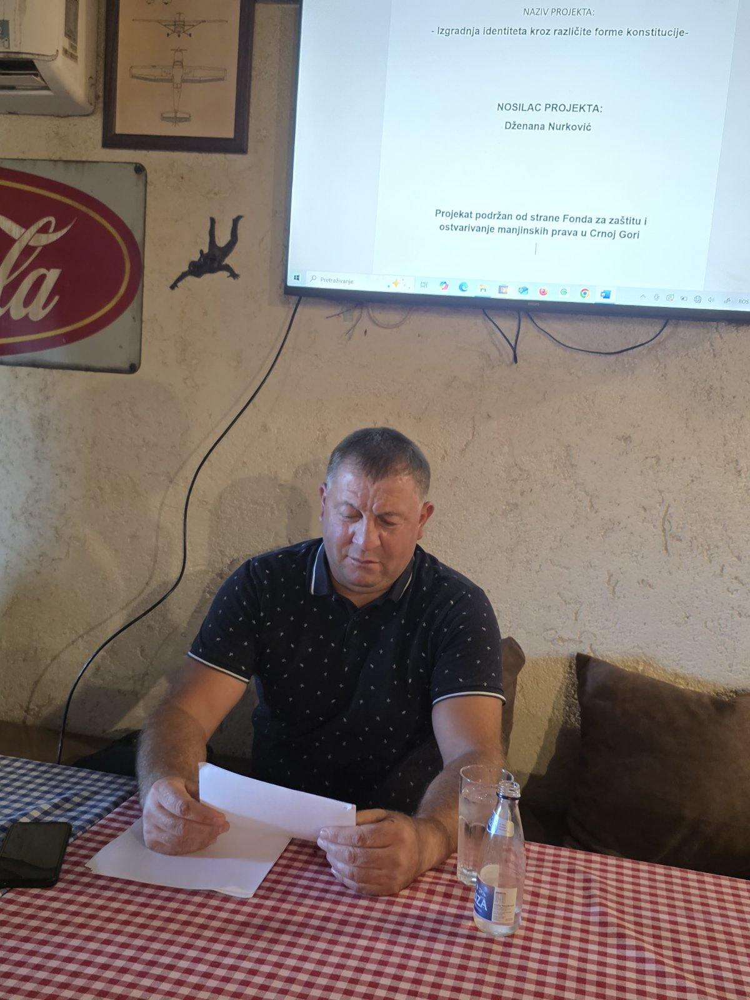
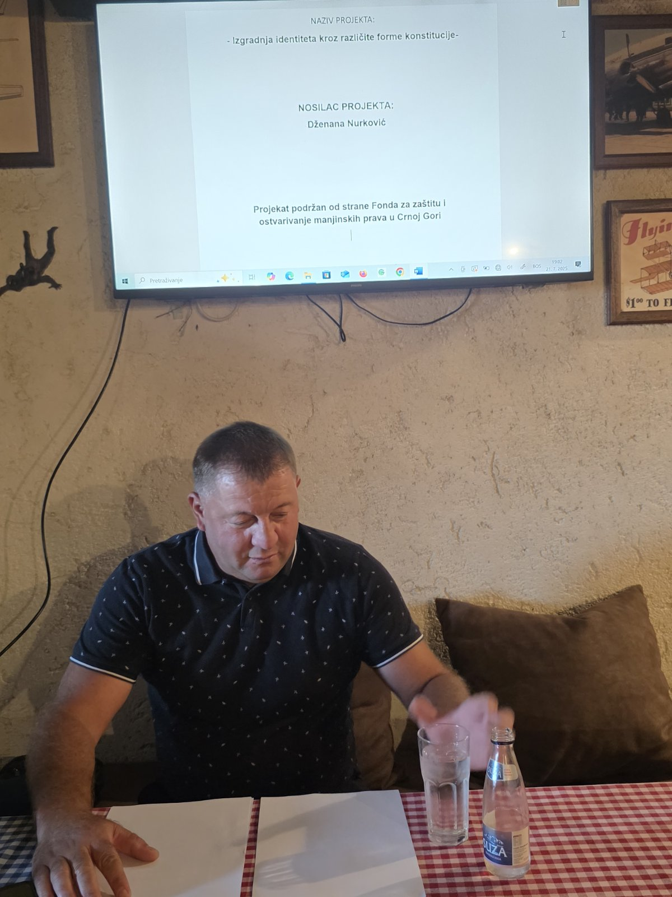

Interviju vodi: Dzenana Nurković
Kako biste opisali svoj nacionalni identitet i šta on za Vas lično znači?
Fadil:
Moj nacionalni identitet je bošnjački, i on je za mene neodvojiv dio mog svakodnevnog života. To je osjećaj pripadnosti narodu sa bogatom historijom, kulturnom baštinom i jasno izraženim vrijednostima. Identitet ne doživljavam kao nešto nametnuto, već kao prirodni dio sebe, poput jezika kojim govorim, jela koja jedem, načina na koji se ponašam prema drugima. On mi pomaže da se orijentiram u svijetu i da razumijem vlastitu ulogu u društvu – kao građanin, otac, komšija i neko ko baštini i prenosi vrijednosti svog naroda.
Koliko je porijeklo Vaše porodice uticalo na Vašu svijest o etničkoj pripadnosti?
Fadil:
Porijeklo moje porodice imalo je veliki uticaj. Odrastao sam u sredini gdje se o porodičnoj historiji govorilo sa ponosom – znalo se ko je ko, ko su nam preci i čime su se bavili. To je stvaralo osjećaj kontinuiteta i dalo mi okvir za razumijevanje vlastitog identiteta. Kroz običaje, svakodnevne razgovore i način života u porodici, učio sam šta znači biti Bošnjak – ne kao etiketu, nego kao skup vrijednosti: poštovanje, gostoprimstvo, odanost porodici i zajednici.
Smatrate li da je nacionalni identitet nešto što se nasljeđuje ili oblikuje kroz iskustva?
Fadil:
Vjerujem da se identitet i nasljeđuje i gradi. Nasljeđujemo jezik, običaje, kulturu, vjeru – ali prava spoznaja dolazi kroz životna iskustva. Kada naučimo zašto određene vrijednosti postoje, kada ih sami primijenimo, tada one zaista postanu dio nas. Recimo, običaj da se gostu ponudi kafa ili večera nije samo forma, već način da se iskaže pažnja i poštovanje. S vremenom shvatimo da identitet nije nešto što se "ima", već nešto što se živi i prenosi.
Kako gledate na povezanost nacionalnog identiteta s religijom
Fadil:
U mom slučaju, religija i nacionalni identitet se prožimaju, ali se međusobno ne isključuju. Islam je sastavni dio bošnjačkog kulturnog identiteta, jer je kroz stoljeća oblikovao mnoge naše običaje, jezik i društvene norme. No, identitet nije isključivo vjerska stvar – on se ogleda i u jeziku, književnosti, muzici, arhitekturi, humoru. Važno mi je da živim u skladu sa vrijednostima koje proizlaze iz obje sfere – da budem pravedan, pošten, pažljiv prema drugima, bez obzira na njihovu vjeru ili porijeklo.
Koliko je važno da mladi ljudi danas poznaju svoju etničku i nacionalnu pripadnost?
Fadil:
Izuzetno je važno. Mladi danas rastu u svijetu u kojem se sve brzo mijenja i gdje je lako izgubiti dodir sa vlastitim korijenima. Poznavanje svoje pripadnosti daje im stabilnost i osjećaj ponosa. Kad znaju ko su i odakle dolaze, lakše razumiju i druge. To ne znači da trebaju odbacivati moderno, naprotiv – moderna znanja i vještine mogu se nadograđivati na zdrav temelj vlastite kulture. Mladi koji poznaju svoje porijeklo sigurniji su u sebe i otporniji na površne utjecaje.
Da li ste ikada imali potrebu dodatno istraživati vlastiti identitet i tradiciju?
Fadil:
Apsolutno. Što sam stariji, sve više osjećam potrebu da dublje razumijem vlastitu tradiciju. Čitao sam o historiji Bošnjaka, izučavao stare narodne pjesme i zanimao se za običaje koji polako nestaju. Smatram da je lična odgovornost svakog čovjeka da ne zaboravi ono što nas čini posebnim. Ponekad čak i sitnice, poput starih riječi koje su naši roditelji koristili, nose veliko značenje. Saznavši zašto su određeni običaji nastali, naučio sam više o tome ko sam i zašto je to važno.
Kako ocjenjujete odnos savremenog društva prema etničkim identitetima?
Fadil:
Savremeno društvo često pokušava da umanji značaj etničkih identiteta, pod izgovorom univerzalnosti i "modernosti". Međutim, mislim da prava modernost podrazumijeva očuvanje različitosti i poštovanje raznolikosti. Umjesto da identitet bude izvor nesporazuma, on može biti osnova međusobnog uvažavanja. Savremeno društvo koje ne prepoznaje i ne vrednuje etničke identitete gubi dio bogatstva koje dolazi iz različitih kultura. Mi trebamo stvarati društvo gdje se svaki pojedinac osjeća slobodnim da izrazi svoj identitet bez straha ili srama.
Kako tradicija i običaji doprinose očuvanju Vašeg identiteta?
Fadil:
Tradicija je živa veza između prošlosti, sadašnjosti i budućnosti. Običaji koje njegujemo – bilo da se radi o načinu obilježavanja praznika, pripremi tradicionalnih jela ili govoru koji se koristi u svakodnevnim situacijama – svi oni pomažu da se osjećamo povezani s našim precima, ali i da prenesemo te vrijednosti na mlađe generacije. Svaki put kad zatražim dovu prije jela ili prenesem unuku priču o narodnoj poslovici, ja zapravo održavam tu nit identiteta.
Šta mislite o etničkoj raznolikosti u Bosni i Hercegovini – da li je ona bogatstvo ili prepreka?
Fadil:
Za mene je etnička raznolikost jedno od najvećih bogatstava naše zemlje. Imati više naroda, jezika, kultura, vjera – to znači imati više perspektiva, više prilika za učenje i više mogućnosti za kulturno obogaćivanje. Kada se ta raznolikost poštuje i njeguje, ona postaje snaga, a ne prijetnja. Naravno, to traži otvorenost, toleranciju i spremnost da se čuje i ono što je drugačije. Ali ja iskreno vjerujem da ljepota Crne Gore upravo leži u toj raznolikosti.
. Šta biste poručili mladima koji možda sumnjaju u važnost svog nacionalnog identiteta?
Fadil:
Poručio bih im da se ne odriču svog identiteta u potrazi za nekom "neutralnom" modernom slikom sebe. Znati ko si, poznavati svoj jezik, kulturu, običaje – to je bogatstvo, a ne ograničenje. Mladi često misle da će im pripadnost nekom narodu suziti horizonte, ali ja vjerujem da će ih to, naprotiv, učiniti stabilnijim, mudrijim i samosvjesnijim. Neka se ne plaše učiti o sebi, neka razgovaraju sa starijima, neka istraže svoju tradiciju. Kad poznaju svoje korijene, moći će rasti više i šire, baš kao stablo koje ima jake temelje.



← Nazad na početnu stranu